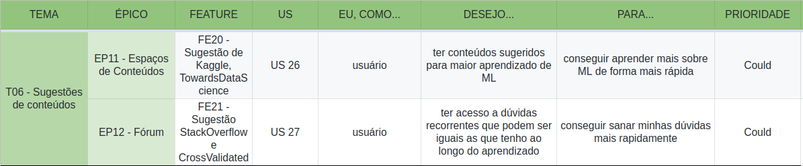

Controle de versão
| Data | Versão | Alteração | Autor |
|---|---|---|---|
| 13/04/2019 | 0.1 | Criação do documento | Gabriel Ziegler |
| 13/04/2019 | 0.2 | Definição da priorização | Gabriel Ziegler |
| 13/04/2019 | 0.3 | Definição dos temas e épicos | Gabriel Ziegler |
| 13/04/2019 | 0.4 | Adição das US com priorização | Gabriel Ziegler, Davi Alves |
| 16/04/2019 | 0.5 | Adição das ferramentas para cada épico | Gabriel Ziegler |
Técnica de priorização
A técnica utilizada para priorização de documentos foi o MoSCoW, que é fortemente utilizada para a priorização de requisitos de software.
A sigla MoSCoW significa:
- Must Have
- Should Have
- Could Have
- Won’t Have this time
Temas e épicos
Os temas e épicos definidos para o PyLearner são:
- T01 Pré-processamento de dados.
- EP - 1 Importação de dados (Pandas)
- EP - 2 Tratamento de dados (Pandas), (SciKit Learn)
- T02 Modelagem.
- EP - 3 Aprendizado supervisionado (SciKit Learn)
- EP - 4 Aprendizado não-supervisionado (SciKit Learn)
- T03 Visualização.
- EP - 5 Visualização de dados (Matplotlib), (Seaborn)
- EP - 6 Visualização de resultados (SciKit Learn)
- T04 Interações do BOT.
- EP - 7 Criação de persona (Rasa)
- T05 Tutorial.
- EP - 8 Iris Flower (SciKit Learn)
- EP - 9 MNIST (SciKit Learn)
- EP - 10 Titanic (SciKit Learn)
- T06 Sugestões de conteúdo.
- EP - 11 Espaços de conteúdos (Medium), (TowardsDataScience), (Kaggle)
- EP - 12 Fórum (Cross Validated), (Artificial Intelligence StackExchange)
Priorização
Tema 1

Tema 2

Tema 3

Tema 4

Tema 5

Tema 6

Referencial
[1] https://www.agilebusiness.org/content/moscow-prioritisation